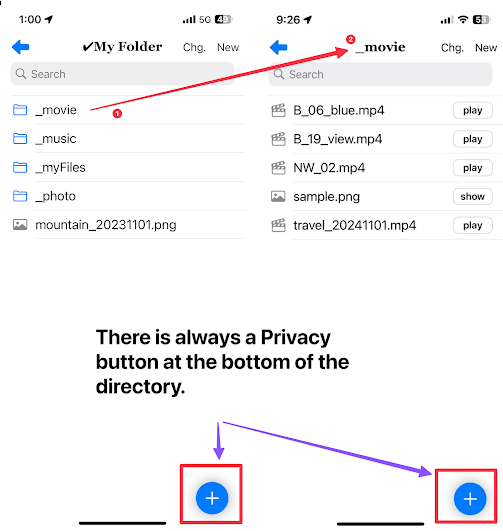
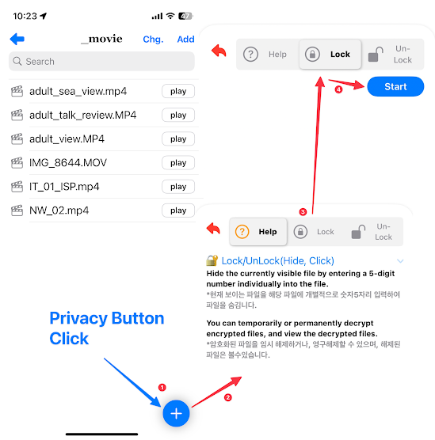
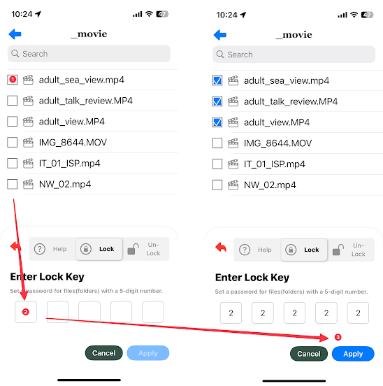
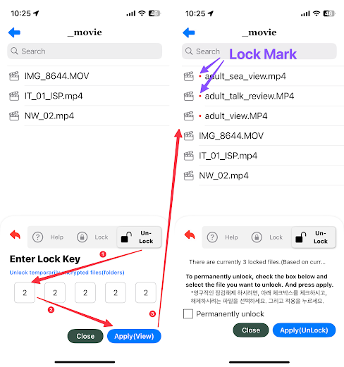
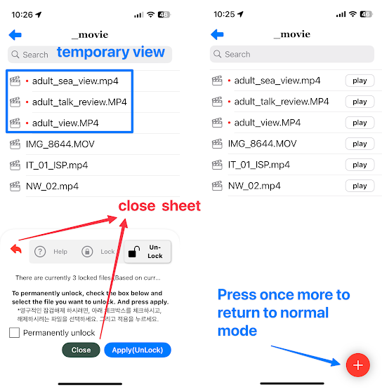

Privacy Button
Ability to lock/unlock files and folders

Lock
Hide the currently visible file by entering a 5-digit number individually into the file.
1. Lock/Unlock starts from the privacy button.
2. Privacy Button Click
3. Click Start

3. Select target files to encrypt at the top (checkbox)
4. Enter 5 digit number
5. Click Apply

UnLock View / UnLock
You can temporarily or permanently decrypt encrypted files, and view the decrypted files.
1. Click Un-Lock Tab
2. Enter 5 digit number
3. When you click Apply(View), the locked information is temporarily displayed.

4. When you close the sheet(window) with the close button, it goes into normal file mode.
5. privacy button This red color indicates that it runs as a temporary view. Press once more to return to normal mode

6. Temporarily unlocked files can be permanently unlocked
7. Select the temporarily released encrypted file at the top (checkbox)
8. Click Apply(UnLock)

* (etc) If the button at the bottom right of the file window is red, the encryption has been temporarily released. If you press the red button, it changes to a blue button (the password file is not visible in general).